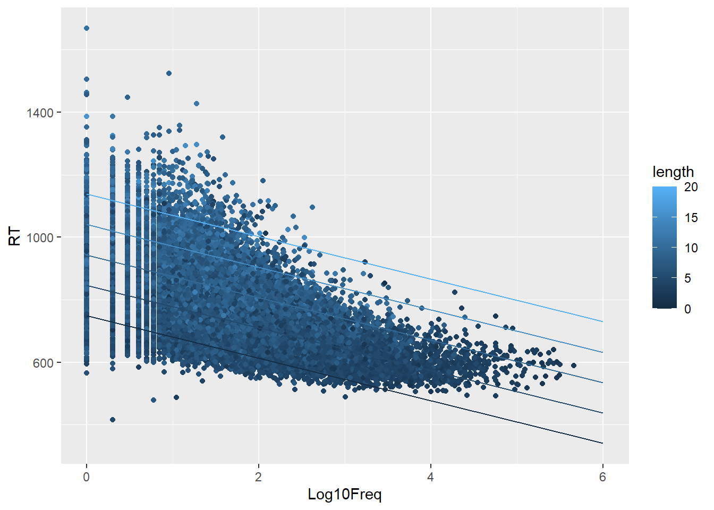

Multiple Linear Regression with several predictors
Published
December 11, 2026
We look in the next sections at examples and outputs of different combinations of models with more than one predictor, still without considering interactions between them (interactions we will cover in Lecture 6 and Workgroup 6).
Multiple Linear Regression with continuous predictors
To illustrate the examples, let’s use the data file from Winter (2019) “ELP_full_length_frequency.csv”
\(b_0\) - intercept: corresponds to the reading time when considering a word of 0 length and 0 frequency. As discussed in previous workgroups, the intercept in this cases does not have a real meaning as we can’t use the model to interpolate beyond the input data range. The intercept is in this case a mathematical construct of the fitted line.
\(b_1\) - slope coefficient for Log10Freq. Represents the change in RT for a change of one unit in Log10Freq at a constant value of length.
\(b_2\) - slope coefficient for length. Represents the change in RT for a change of one unit in word length at a constant value of Log10Freq.
We can use the model to predict values for a particular set of values. E.g., if we had a word of length = 4, with a log Frequency value of Log10Freq=1.6, the predicted RT would be:
\[RT=748.43-68.02\times1.6+19.46\times 4=717.44\]
The function predict can be used to predict values based on a model:
new <-data.frame(Log10Freq=c(1.6),length=c(4))predict(m_ex1,new)
The model statistics are as per previous examples, where \(R^2_{adj} = 0.487\), indicates the model explains ~48% of the variance in the data, and the statistic \(F(2,33072)=15720,p<.001\) indicates that the model is significant compared with a null model with intercept only.
Model visualization with two continuous predictors
A model as the one build without any interaction, is to be interpreted as follows:
Given a certain value of one of the continuous predictors, we will have a curve predicting the change with the other predictor. E.g. if we consider words of lengths 2, 5 and 10, the model specifies the following fits:
All the models above are lines with the same negative slope and with different intercepts.
This can not be easily visualized using ggplot() , but there is a function in the package ggiraphExtra developed to do that. To try it, install the package first as:
install.packages("ggiraphExtra")
Note
You may have to also have to update a related library using:
install.packages("htmltools")
If asked to restart the R session say “Yes”
Then use the ggPredict function to plot the model with two variables.
library(ggiraphExtra)
Warning: package 'ggiraphExtra' was built under R version 4.5.2
ggPredict(m_ex1,terms=c("length","Log10Freq"))
Warning: `aes_string()` was deprecated in ggplot2 3.0.0.
ℹ Please use tidy evaluation idioms with `aes()`.
ℹ See also `vignette("ggplot2-in-packages")` for more information.
ℹ The deprecated feature was likely used in the ggiraphExtra package.
Please report the issue to the authors.

As you can see, the plot represents the model at a number of values of length.
Model Selection
The coefficients statistiscs shows that both coefficients are significantly different from 0, indicating that the RT depends on both logarithmically transformed frequency and length.
Let’s compare the model with simple linear regression models with only one of the predictors:
As we can see from the anova(), BIC() and AIC() results, the model with both predictors is preferable compared with with the simple linear models.
Effect size and standardized coefficients
One issue with the fitting of model with several predictors on different scales, is that is not possible to compare the relative effect of each of them. What affects more the Reading Time? the word frequency or the length? Frequency and length are variables in different scales and cannot be directly compared.
To do that, we can use the concept of standardized coefficients. These coefficients are calculated by fitting a model to the standardized transformed predictors. For each predictor we calculate the z-score, by removing the mean and dividing by the standard deviation of the predictor. We do the same for the dependent variable.
This can be done by the scale() function. If we do a fit as follows:
As you can see, the F-statistic is the same, but now the coefficients have a different interpretation:
\(\beta_0\) - The intercept is 0, as the output has been scaled to have zero mean.
\(\beta_1\) - The slope for Log10Freq is -0.487, which indicates that a change in 1-standard deviation of Log10Freq results in a negative change of 0.487 standard deviations in RT, for a fixed length.
\(\beta_2\) - The slope for length is 0.348, which indicates that a change in 1-standard deviation of length results in a positive change of 0.348 standard deviations in RT.
Now we can directly compare as they are all expressed in standard deviations. The effect size of Log10Freq is stronger than that of length, since it results in a larger change in RT.
Standardized coefficients are also called beta coefficients and make sense with continuous variables, where a change of 1-standard deviation has a meaning. This is obviously not the case with categorical predictors.
Note
Reporting of standardized coefficients
When calculating standardized coefficients report is as per previous examples, but use the notation.
Ex: Reading time exhibited a significant relationship with both the logarithmically transformed Frequency (\(\beta=-0.49,t(33072)=-114.54,95\%CI[-0.496,-0.479], p<.001\)) and word length (\(\beta=0.35,t(33072)=81.86,95\%CI[0.340,0.357], p<.001\)).
Multiple Linear Regression with continuous and categorical predictors
All the principles discussed in the sections below apply in the case of a continuous and a categorical predictor.
In case of a categorical predictor, often the concept of discriminator predictor is used.
Let’s look at an example with the lexdec dataframe in the languageR package and fit a model on the Reading Time as a function of Frequency and NativeLanguage
What you can see from the output is that there are two curves, one for each level of the NativeLanguage factor, so we can consider that the model represents two curves with same slope and two different intercepts: